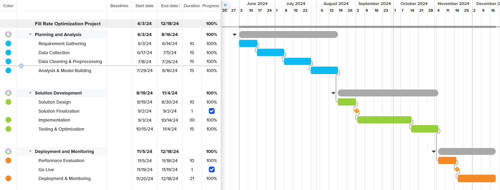

📊 Data Insights & Impact
We processed data from **7+ financial institutions**, analyzing over **0.1 million transactions**, which helped optimize supply chain fill rates for **15+ brands** across industries.

Performed at Affinity Solutions
The **Fill Rate Optimization Project** was designed to analyze and enhance marketing efficiency by leveraging agile methodologies and data analytics. It involved processing **0.1 M of financial transaction data** from **multiple financial institutions** to help design and improve marketing strategies of various brands and optimize supply chain solutions for brands.
This project followed a structured **6-month timeline** using Agile frameworks like **Scrum and Kanban**.
We processed data from **7+ financial institutions**, analyzing over **0.1 million transactions**, which helped optimize supply chain fill rates for **15+ brands** across industries.